Hi, I am Ajay. I am a Software Engineering major from SJSU.
This website showcases some of my skills and projects.
I like to make and break things.
And remember... It's not a bug, it's a feature.
Kept my eyes and ears open. Got my hands dirty trying to code. Took ownership of my projects. Worked directly with clients. Was guided by amazing mentors. Designed beautiful interfaces.
2017 - 2019
San Jose State University
Joined SJSU as a Software Engineering Grad student. Fast tracked into learning advanced concepts and apply them in the academic projects.
May 2018 - December 2018
Software Engineering Intern, Philips Andover
Worked in healthcare company.Explored new cultures. Designed user friendly tool for the testing team. Tuned performances. Travelled through East Coast. Withstood Boston's cold
SONIFY - Graph Sonification to make visual Graphs Accessible
Graph sonification was our MHCI Capstone Project at CMU, sponsored by Bloomberg L.P. We researched accessibility in desktop computers, and found pain points in accessing visual content for people with a vision impairment. We prototyped ways of making visual graphs accessible, and built a touchscreen application to sonify visual data such that it is comprehensible to people with a vision impairment.
Our research led us to focus on helping people who are blind hear the contents of a graph through tones. Our current prototype can be seen above. The UI is completely through touch input and audio output. As the user pans left and right a tone is played that represents how high or low the graph is at that given point. People can swipe up and down to change the number of graphs. People can also chose which stock price graphs they wish to listen to (the demo video shows Microsoft Equity Graph and NASDAQ). People can change the range of dates for which they want to listen to the data (week/month/year) and zoom in and out of the graphs.
PROCESS
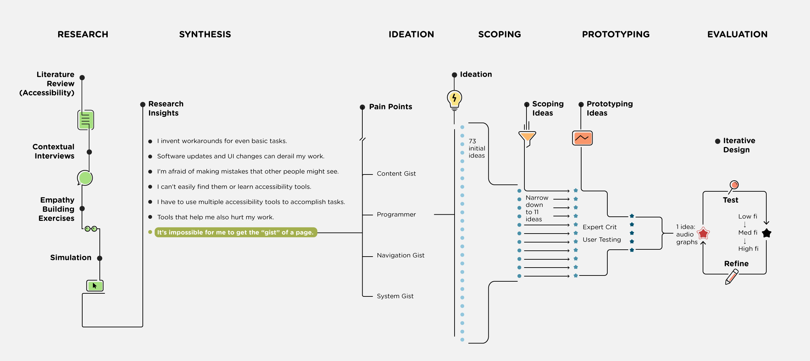
Timeline: January - August 2016
Client: Bloomberg L.P.
Mentors: Dr. Bonnie John, Richard Ram, Drew Gulley, Karen Berntsen, Gary Minnaret
TEAM
Laya Muralidharan, Felicia Alfieri, Monali Agarwal, Jacob Jorgensen, Safinah Ali. My primary role was Interaction Design. My responsibilities include user research, design, prototyping, iOS and web development. Coming from a visual design background, I mentored my team on design, interactions, and presentation. I learned immensely from my team about research, writing and development.
BACKGROUND
This is a project sponsored by Bloomberg with the goal of improving the accessibility of the Bloomberg Terminal. For the first four months we conducted user research while at Carnegie Mellon University and narrowed down the project space. We are currently designing, prototyping and developing a solution at Bloomberg's headquarters in NYC.
RESEARCH
We conducted research during a semester at Carnegie Mellon. It consisted of literature review, interviews with people with disabilities,interviews with Bloomberg stakeholders and an empathy study. Our timeline can be seen below:
Literature Review
Our team was entirely new to the field of accessibility, so we had decades of research to review. We split up accessibility over a few domains and studied the field over about a month.
We created a secondary research report for our clients, that synthesized the majority of our findings in our literature review. We wanted to go beyond dividing disabilities into the broad categories of visual, cognitive, auditory and motor. We found that there was overlap between those four categories and the solutions that exist. Instead we broke our research into conditions, limitations and solutions. An excerpt from our report can be seen below:
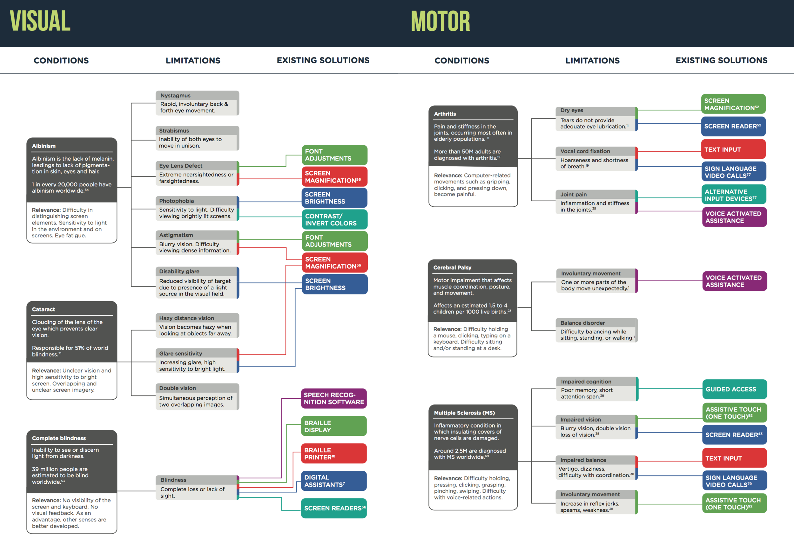
Empathy Studies
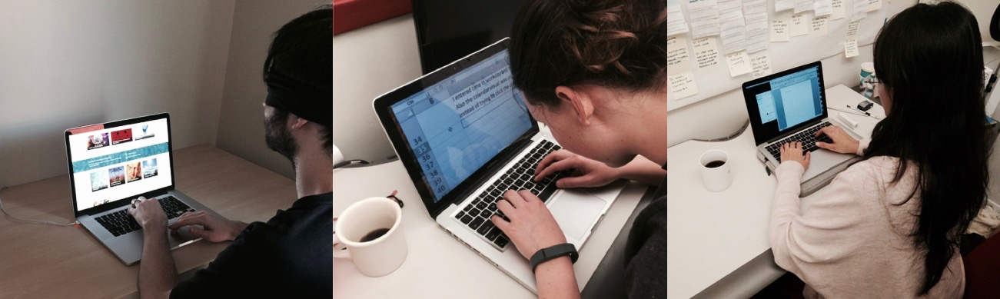
In order to gain empathy for those with disabilities and to gain a better understanding of the tools they use, we simulated a few common conditions. While empathy studies don't provide accurate insight into disability, we found it helpful to experience things from a different perspective. For example, I wore sound cancelling earplugs to simulate deafness, while using my computer for one week. I observed what I had expected - missing out on notifications. What I did not expect, however, was that I missed out on audio feedback from software such as Skype and Slack, that indicate the system state.
Interviews and Contextual Inquiry
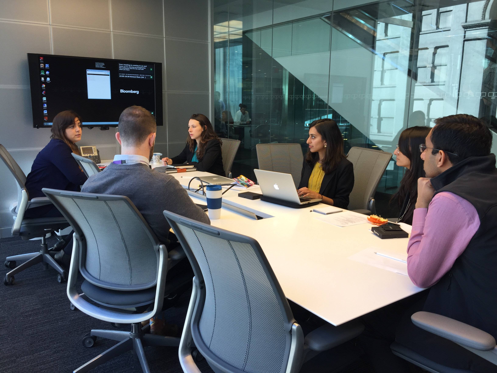
To better understand the human experience of computer accessibility, we interviewed computer users with disabilities. We asked participants to explain how their conditions or limitations affect their computer experience and any outstanding challenges they face while working.
Through observation, we could see where accessibility tools helped immensely, and where they fell short. We also noted how participants developed workarounds to overcome challenges.
We conducted stakeholder interviews with various teams at Bloomberg. These interviews gave us a better understanding of Bloomberg’s internal processes and organizational structure, as well as the firm’s philosophy toward the development and use of tools to enhance computer accessibility.
We also had the opportunity to interview key stakeholders at Bloomberg from design, engineering, diversity & inclusion, legal, human resources and sales.
Interview Synthesis
Following our interviews, we took all of our notes and looked for patterns in our interview data. We grouped our findings into categories and subcategories in a large Affinity Diagram.
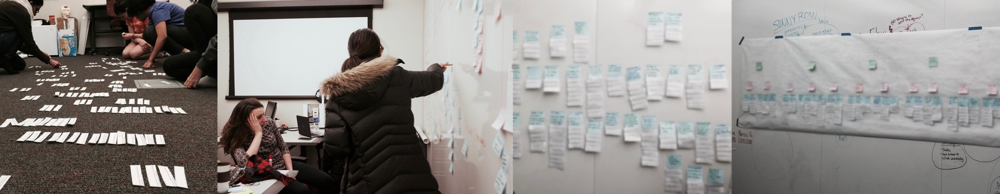
Research Insights
We synthesized all of our data from our literature review and interviews and were able to come up with seven broad insights that encompassed many of the small points we consistently found in our research (written from the perspective of our users):
I invent workarounds for even basic tasks
Software updates derail my work
I am afraid of making mistakes other people might see
Even if accessibility tools exists, I can't easily find or learn to use them
I have to use multiple accessibility tools to accomplish a single task
Tools that help me also hurt my work
It's impossible for me to get the "gist" of a page
COMMUNICATING OUR FINDINGS
In order to communicate our findings effectively, we prepared and gave a presentation for our clients. We also wrote and designed a short research findings book that our clients could not only read, but also share with others at Bloomberg. We then held a visioning session with our clients in which we had them participate in the design and brainstorming process so that they could feel invested in the ideas that we generated.
BRAINSTORMING
After our visioning session we brainstormed and conducted a more specific literature review in order to narrow down our focus to one of our seven insights. Eventually we narrowed our focus on our seventh insight, "It's impossible for me get the gist of a page." By doing so, we decided to create a solution that could help those with visual impairments.
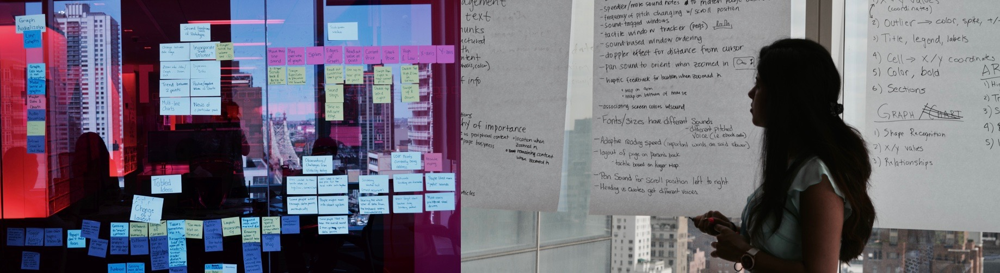
After narrowing our focus on this insight, we brainstormed even further. Eventually we narrowed down to 11 concrete ideas that had the potential to help someone with a visual impairment get the gist of the GUI, content or system status.
PROTOTYPING
Since our focus was on people with visual impairments, many of our prototypes would have to have custom audio or text-to-speech. Because of this, many of the common prototyping tools wouldn't work or would be overkill. We started by creating mock ups for each of our 11 ideas and passed them by the UX team at Bloomberg. We then created rough prototypes for five of our ideas using Keynote, paper and audio files. we then tested our prototypes with three users that were internal to Bloomberg.
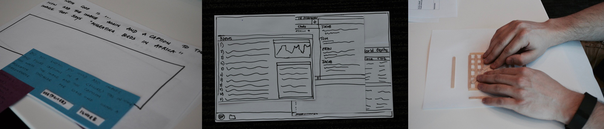
From these tests, we were able to get a feel for what was and wasn't working. After our user tests and further discussion, we decided to focus on graph sonification.
Interviews and Think-Alouds
In order to understand how charts and graphs are used by those in the finance field, we conducted interviews and "think-alouds" with around 20 participants. We interviewed four graph designers/engineers and three expert users. We followed that up with ten quick think-alouds with other Bloomberg employees. We also met with people from a local blind community who walked us through the ways they currently interact with graphs. From these interviews, we were able to get a deeper understanding of how graphs were used in the Bloomberg Terminal and in general in the blind community.
Usability Testing
For our next round of testing, we focused on user interaction. We took some time to brainstorm how we would want the user to interact with our next prototypes. We sketched out ideas and weighed our options, which you can see here:
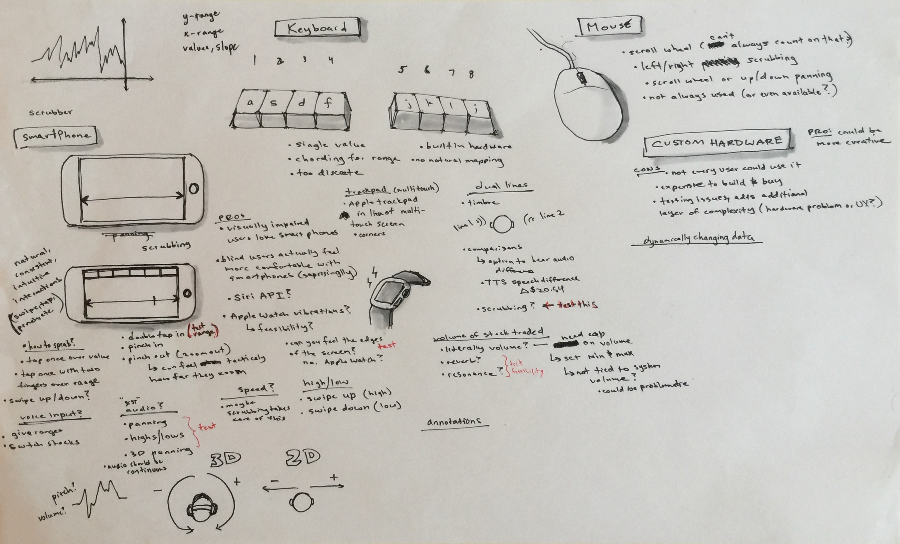
After our brainstorming session, we decided on testing a few iterations and features. In these iterations, users interacted with our prototypes through keyboard commands or scrubbing back and forth through a graph via a trackpad. We sought to answer the following questions from these tests:
Which interaction gives participants the most accurate interpretation of a graph?
Which audio sounds are most pleasing?
Which audio sounds lead to the most accurate interpretations of a graph?
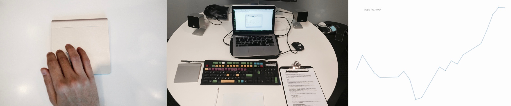
For this round of user testing, I built the keyboard interaction to make an HTML web-app with sound. I programmed key patterns in the keys of the Bloomberg keyboard, where each key signified a specific value and certain keys played the stock chart patterns. I wanted to evaluate the interaction of the input medium, and learnability of the data when presented in sound. Our second prototype was built with a track-pad interaction where the user could crub across the device to listen to stock patterns. When we completed our prototypes, we were able to use the usability lab at Bloomberg to test with 6 participants (plus an additional participant for a pilot round).
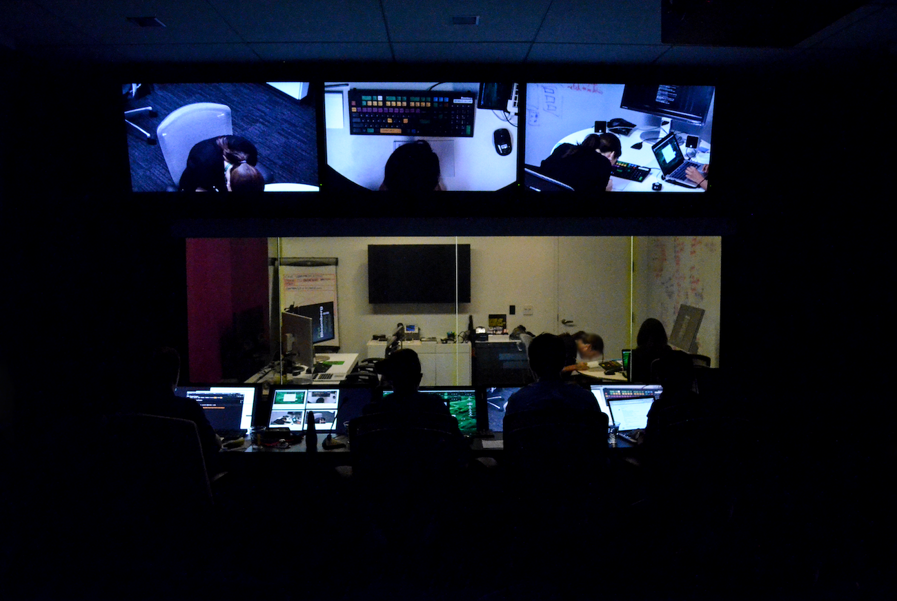
We found out that both the interactions - keyboard and scrubbing had their advantages and disadvantages. While partcipants preferred using the keyboard interaction due to familiarity and discrete data points, they could recreate graphs more accurately using the scrubbing interface. Participants often were confused about picking up their finger or wondering when they were at the end of the graph or not. We decided to pick the best of both the prototypes and make a combination - an interaction that provides discrete discrete data points, as well as gives full user control. We decided to move from a trackpad to a smartphone touch interface. Moving from a relative positioning system (trackpad) to an absolute positioning system (touchscreen) we could overcome these shortcomings.
We also found that text-to-speech output took longer to get the gist of the graph, but it was quite accurate. By combining the strengths we saw in each iteration, we moved on to a touchscreen prototype.
Prototype
Based on our insights from earlier prototyping sessions, we built an iOS prototype app for both iPhone and iPad. In our first two round of testing with blind participants, we learned that they prefer using the iPhone interface because they have a better sense of space on it, and find the iPad very effort-full to scrub. After 4 rounds of user testing, and iterating, we went through several interactions and gestures. We also added features, such as multi-line interactions, and panning sounds based on the feedback we received from users.
Phase 1
Phase 2
Phase 3 early prototype
One challenge we faced while designing interactions was the clash we were having with existing voice-over interactions. We resolved these in drawing parallels from Apple's voice-over interactions, and using similar gestures. For example, Apple uses a 3-finger tap to get the summary of an element. Another tech challenge we faced was overriding the voice-over control on the application. We initially designed the application such that voice over does not work in it. But this decision received negative feedback as people with a vision impairment rely on voice over for all interactions. Hence we re-designed the application such that voice-over works in the top half of the screen, which contains all the user control, and the bottom half uses the scrubbing gesture for getting the gist of the graph. We designed the three finger interaction to provide a quick summary of the graph.
From our user research, we had learned that users with a vision impairment are often helped by other sighted users in performing desktop tasks, especially when there are errors. For this purpose, we decided to build a visual interface to the application. This could also benefit partially sighted users and could extend our application to fully sighted users as well. Some iterations of the visual interface can be seen below.
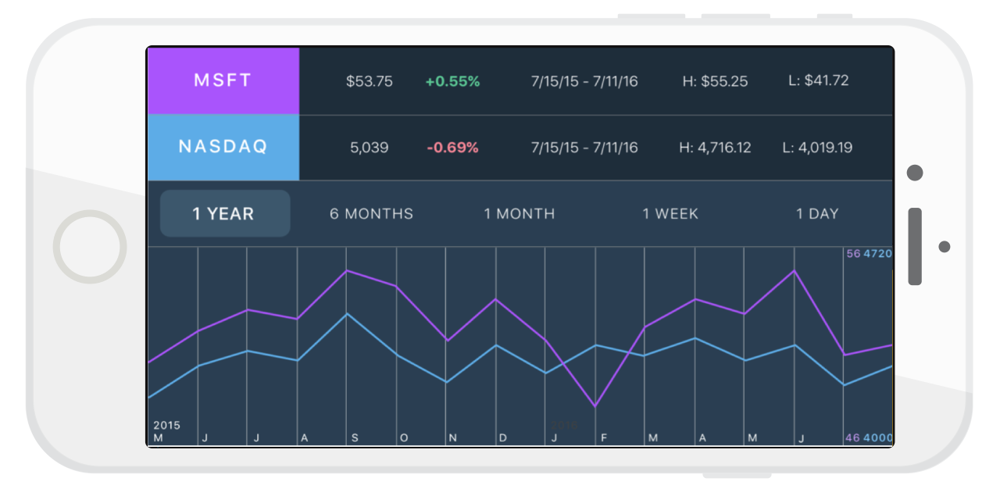
Visual Interface iteration 1
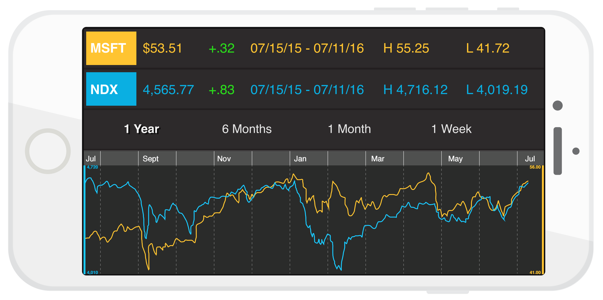
Visual Interface iteration 2
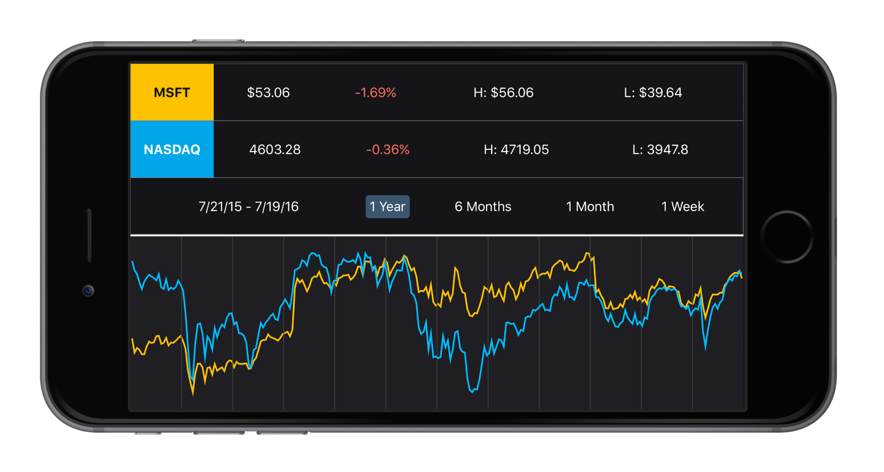
Visual Interface iteration 3
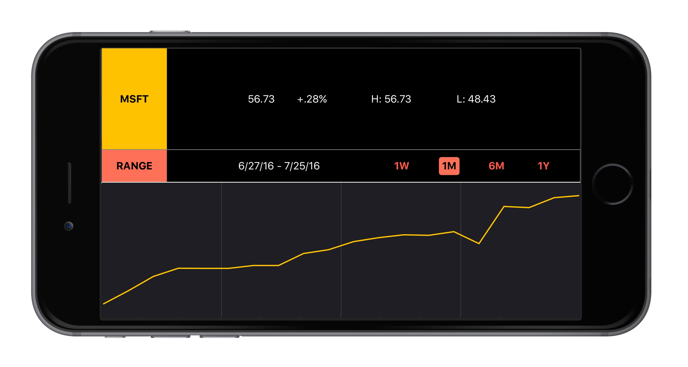
Visual Interface iteration 4
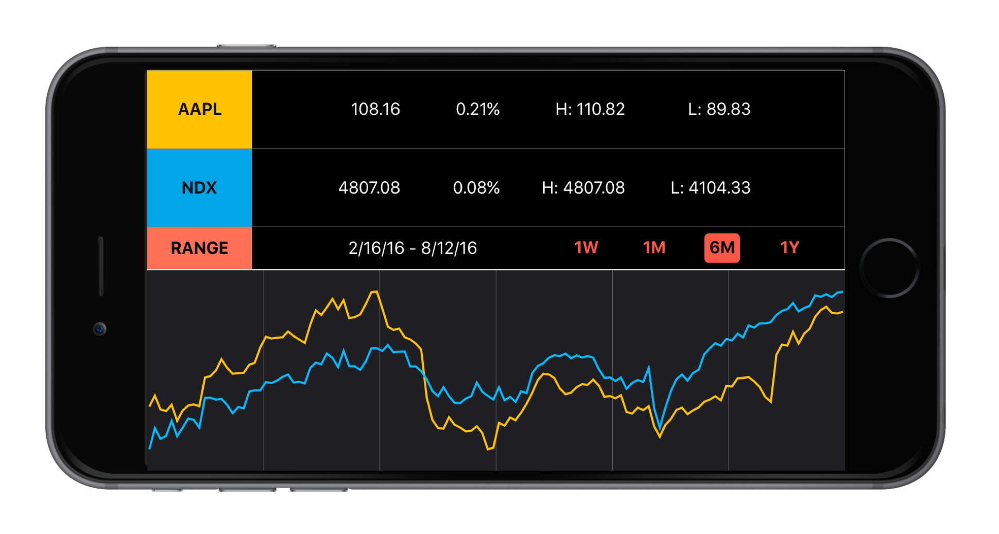
Visual Interface - final iteration
Sonify has been completely programmed in Swift, in the XCode 8 integrated development environment. Sonfiy makes use of AudioKit, an audio synthesis, processing, and analysis platform for OS X, iOS, and tvOS. Sonify is pulling data from Kibot.com, historical intraday market data for stocks, indexes and ETFs.
Interactions
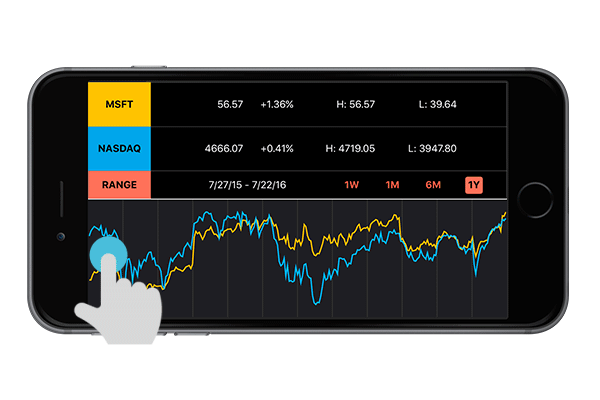
Open the app and drag a finger left and right across the bottom half of the phone screen to play a sonified line. The horizontal movement traverses X-values (dates), and corresponding Y-values (stock prices) are represented through rising and falling pitch.
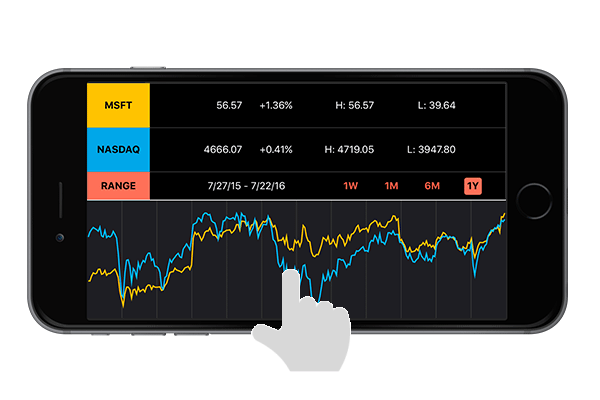
Tap anywhere on the graph to hear the X and Y values at that point.
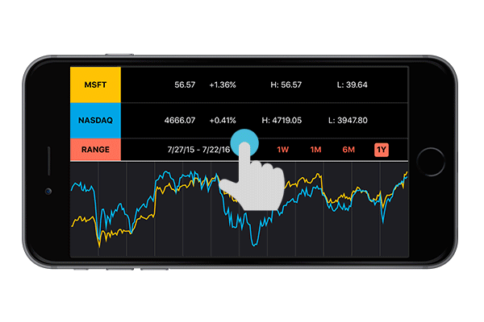
Interact with the top half of the screen to navigate a menu that is compatible with VoiceOver, Apple's in-built screen reader. Use VoiceOver gestures to navigate the menu to access summary information about the graph, including current price, highs and lows, and date range.
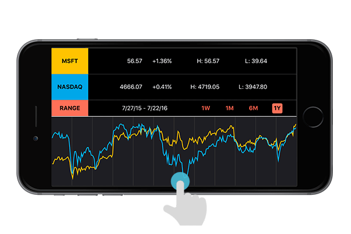
Swipe down in the graph section to switch to a second line. Swipe down again to access both lines simultaneously. Each line is represented by a different sound, to distinguish between the two for comparison.
Evaluation
We tested our current prototype with four blind users so far with positive results. We received constructive feedback from the users about features that were difficult to understand, and features they found very useful. One user quote that particularly stood out was:
"It paints a better picture than gonig through numbers. I haven't seen graphs in 20 years... but then, by using this app, last time and this time, my ears and my brain is beginning to be like, oh, much easier."
There are 39 million people worldwide that are estimated to be blind, and we know of only 7 blind stock traders in the world. We aren't improving a product used by thousands, but we are creating an opportunity for millions of people to use graphs.
Sonify has been developed and launched, and can be downloaded here.
A Survey App
The project was carried out as a part of my Advanced Database class.
I worked on creating the schema for the database along with the ER Diagram and then developing the web application on MERN stack was the scope of the project.
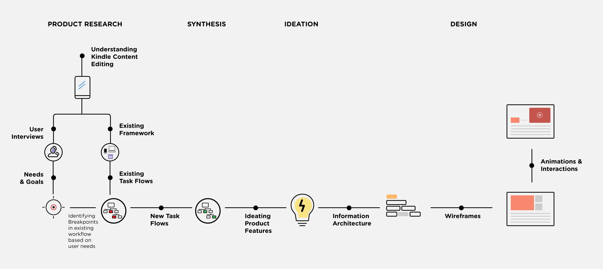
Timeline: May - July 2014
Employer: Amazon.com
Mentor: Mr. Sridhar Godavarthy, senior Software Development Engineer, amazon.com
BACKGROUND
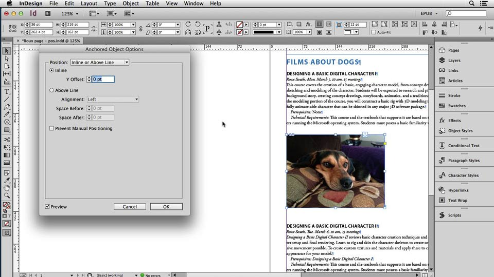
Tools currently used to edit Kindle content
TEAM
PROCESS
WHAT I LEARNED
The Gender Gap
This information visualization project was carried out as a part of the elective course, Information Visualization. I designed graphics to visualise the sex ratio of urban and rural India over the years. I further made an Illustrator script to visualize a similar data from every state in the country.
Timeline: December 2015
Course: Information Visualization
Mentors: Prof. Prasad Bokil
Background
Decades of sex determination tests and female foeticide that has acquired genocide proportions are finally catching up with states in India. The decline in child sex ratio in India is evident by comparing the census figures. In 1991, the figure was 947 girls to 1000 boys. Ten years later it had fallen to 927 girls for 1000 boys. This is alarming. More than we realize. An imbalance in gender ration, can lead to severe repercussions for the society. Moreover, these figures depict a discriminatory history against females, that I felt compelled to bring to light. As a part of my elective course, Information Visualization, I chose to pick a socially relevant topic, and best use visualization to bring to light the gender divide of the country.
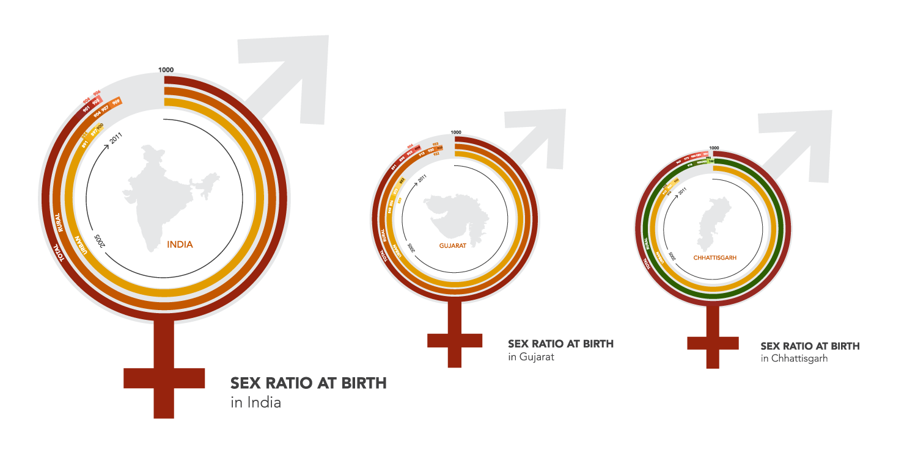
Process
The course taught me several information visualization techniques and which ones work well for specific kinds of data. I decided to chose a dataset with multiple dimensions, in order to learn multi-level data visualization. The data set included gender rations (number of female citizens for every 1000 male citizens) in urban and rural areas from 2005 to 2011. There was no data for the number of trans-gender citizens.
I iterated on several layouts to visualize this data. We went through several rounds of critique in the class and made improvements and increments in the iterations. Some initial iterations can be seen here:
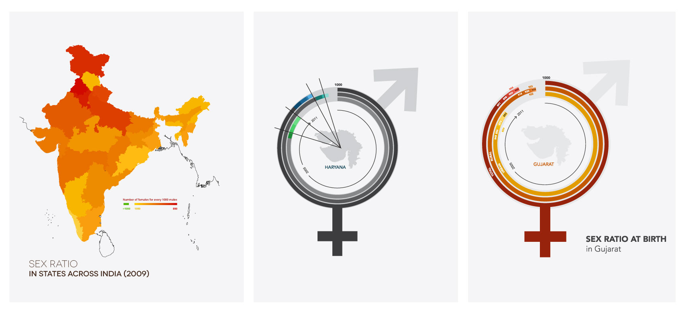
I finally settled on a circular layout owing to the multi-level data. I wanted to depict the 'gap' which is why I used a 'part of a whole' technique, where the number of female citizens are shown as a part of the full circle of '1000' male citizens. The colors were used to show a gradient of alarm, while pointing out extremes. I also used a contrasting green for rare anomalies for data that stands out. For example, the state of Chhatisgarh has a gender ration higher than 1000. I used visual outlines of gender symbols and states for visual depiction of the concept.
I have, also further worked on creating custom illustrator scripts (only compatible with CS6) for visualizing data from any state. Contact me for access to the script.
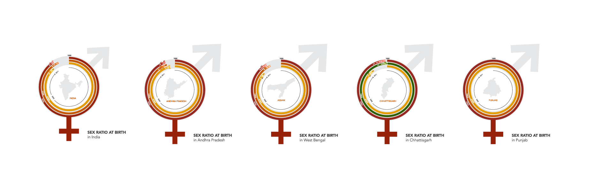
Motion Graphics
I have been actively teaching myself motion design, and animation using Framer.js, and Adobe After Effects. I have explored stop motion animation, motion graphics, and kinetic typography. These are some of my work samples.
Visual Design
I am a visual design enthusiast, and have been practicing visual communication for four years. I have worked with event branding, social initiatives, freelance projects, and personal projects.
In order to understand challenges faces by drivers, particularly learners, we conducted an initial research. We used interviews, surveys, read literature on road rage, and reviewed statistics on road accidents. We focused on parking, external distractions safety, struggles that learners face internal distractions, speeding, and feedback for drivers. We found out a bunch of pain-points including parking troubles, difficulty in communication, confusing signage, and a lack of feedback. We decided to focus on communication breakdown between drivers, and stress inducing feedback experience by novice drivers.
Service concepts
Based on our research, we storyboarded some initial service concepts. These included:
Car to car feedback: Creating a means of communication between cars (i.e. communicating via bluetooth through a built-in voice controlled audio system), so that drivers can inform other drivers of their driving constructively. Example, telling drivers to speed up, or notify or warn them.
Automated driving feedback: Another service concept for our design opportunity is a built-in ‘intelligent assistant’ like SIRI that would grade and comment on a driver’s driving performance during and after a trip with positive criticism in a calm voice. New drivers would benefit from this type of service, as they would be receiving feedback from a third-party in a constructive manner that would not discourage / stress them and thus ruin their driving experience.
Creating empathy for drivers: This service concept would be some sort of system that would monitor, grade and label a driver’s driving performance and make it visible to other drivers nearby what types of drivers are on the road. This system would allow drivers to be aware of the circumstances they are in as they share the road with other drivers, and adjust their driving accordingly
Prototyping service concepts
We Speed dated these concepts with potential users by asking them to go through the service scenario, and think aloud what would work, or what wouldn't work for them. Based on the feedback we received, we creating 4 new service scenarios focusing on inter-car and automated feedback, as well as creating empathy for other drivers. We enacted some of these scenarios with potential users by using toy cars, and asked them to think aloud about their experience and decisions throughout the activity. We received a mixed feedback, where people were happy about in-car communication, but found positive driving feedback to be patronizing. This feedback helped up narrow down on one solution.
Solution
We created a built in an Intelligent Driving Assistant (MIDA), that provides learners with constructive feedback, to supplement driving teachers and parents with the benefit of decreasing stress and increasing freedom. This is a valuable business case because driving schools can use MIDA to teach new drivers, DMV can use MIDA to assess driving ability, it encourages better driving habit, and fewer accidents. Hence, we re-positioned our stakeholder model, due to the addition of the new service MIDA.